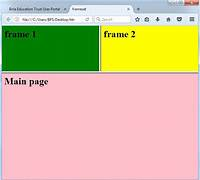

FRAMES
Los frames (marcos) en HTML son una forma de dividir una página web en varias secciones independientes,
cada una con su propio contenido. Cada frame es una ventana separada que puede contener un documento
HTML independiente.
Los frames se utilizaban comúnmente en el pasado para crear diseños de página más complejos, pero su uso
ha disminuido en favor de técnicas más modernas como CSS y JavaScript.
La etiqueta < frameset> se utiliza para definir un conjunto de frames, y la etiqueta < frame> se utiliza para
definir cada frame individual. La etiqueta < noframes> se utiliza para proporcionar contenido alternativo para
navegadores que no admiten frames.
Atributos de la etiqueta <frameset> :
- <rows> : especifica la altura de cada frame en filas.
- <cols> : especifica la anchura de cada frame en columnas.
Atributos de la etiqueta <frame>:
- <src> : especifica la URL del documento HTML que se carga en el frame.
- <name> : especifica el nombre del frame.
- <scrolling> : especifica si se muestra o no la barra de desplazamiento.
- <border> : especifica el grosor del borde del frame.
Ejemplo básico de frames:
<frameset rows="50%,50%">
<frame src="pagina1.html" name="frame1">
<frame src="pagina2.html" name="frame2">
<noframes>
<body>
Contenido alternativo para navegadores que no admiten frames.
</body>
</noframes>
</frameset >
Este es un ejemplo básico, pero los frames pueden ser configurados de muchas maneras diferentes para crear
diseños de página más complejos. Sin embargo, como mencioné anteriormente, su uso ha disminuido en favor
de técnicas más modernas.
